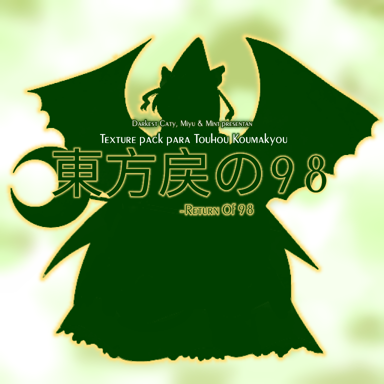

Return of 98 is a texture replacement mod for Touhou 6 EoSD - Embodiment of Scarlet Devil, it was released on february 27th, 2024 as a texture pack that transforms TH06 into a remix of the pc-98 era, which changes the UI, items, bullets, stats, characters, etc.
This was one of the first released mods by caty-sumi, thinking on the pc-98 era enjoyer touhou fans.

Kanji: 東方戻の98
Type: Retexture
Release: February 27th, 2024
Developers: Dark Caty, Mint, Miyu
Dimension: Old Gensokyo